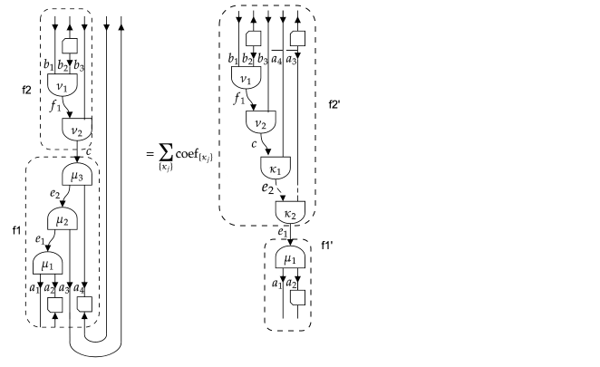
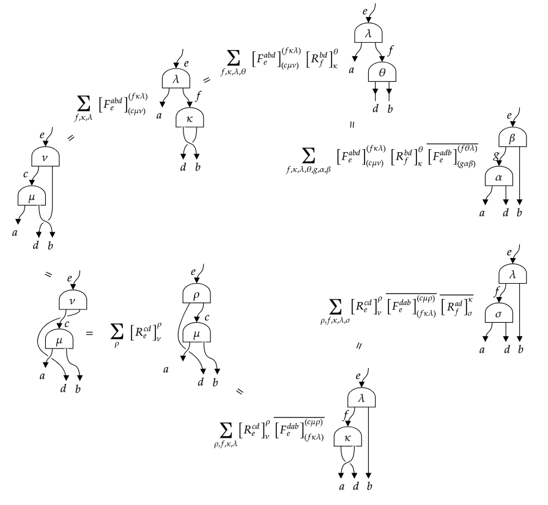

Sectors, representation spaces and fusion trees
Types
# General Sector
abstract type Sector end
struct SectorValues{I<:Sector} end # Singleton type to represent an iterator over the possible values of type `I`, whose instance is obtained as `values(I)`.
const SectorDict{K, V} = SortedVectorDict{K, V}
abstract type FusionStyle end
struct UniqueFusion <: FusionStyle end # unique fusion output when fusion two sectors
abstract type MultipleFusion <: FusionStyle end
struct SimpleFusion <: MultipleFusion end # multiple fusion but multiplicity free
struct GenericFusion <: MultipleFusion end # multiple fusion with multiplicities
const MultiplicityFreeFusion = Union{UniqueFusion, SimpleFusion}
abstract type BraidingStyle end # generic braiding
abstract type HasBraiding <: BraidingStyle end
struct NoBraiding <: BraidingStyle end
abstract type SymmetricBraiding <: HasBraiding end # symmetric braiding => actions of permutation group are well defined
struct Bosonic <: SymmetricBraiding end # all twists are one
struct Fermionic <: SymmetricBraiding end # twists one and minus one
struct Anyonic <: HasBraiding end
struct Trivial <: Sector end
# Anyon category
struct FibonacciAnyon <: Sector
isone::Bool
function FibonacciAnyon(s::Symbol)
s in (:I, :τ, :tau) || throw(ArgumentError("Unknown FibonacciAnyon $s."))
new(s === :I)
end
end
const _goldenratio = Float64(MathConstants.golden)
struct IsingAnyon <: Sector
s::Symbol
function IsingAnyon(s::Symbol)
s == :sigma && (s = :σ)
s == :psi && (s = :ψ)
if !(s in (:I, :σ, :ψ))
throw(ValueError("Unknown IsingAnyon $s."))
end
new(s)
end
end
const all_isinganyons = (IsingAnyon(:I), IsingAnyon(:σ), IsingAnyon(:ψ))
# Group
abstract type Group end
abstract type AbelianGroup <: Group end
abstract type ℤ{N} <: AbelianGroup end
abstract type U₁ <: AbelianGroup end
abstract type SU{N} <: Group end
abstract type CU₁ <: Group end
const ℤ₂ = ℤ{2}
const ℤ₃ = ℤ{3}
const ℤ₄ = ℤ{4}
const SU₂ = SU{2}
const GroupTuple = Tuple{Vararg{Group}}
abstract type ProductGroup{T<:GroupTuple} <: Group end
# Rep_G category
abstract type AbstractIrrep{G<:Group} <: Sector end # irreps have integer quantum dimensions
struct IrrepTable end
const Irrep = IrrepTable()
const AbelianIrrep{G} = AbstractIrrep{G} where {G<:AbelianGroup}
struct ZNIrrep{N} <: AbstractIrrep{ℤ{N}}
n::Int8
function ZNIrrep{N}(n::Integer) where {N}
@assert N < 64
new{N}(mod(n, N))
end
end
Base.getindex(::IrrepTable, ::Type{ℤ{N}}) where N = ZNIrrep{N} # Irrep[Z{N}] = ZNIrrep{N}
const Z2Irrep = ZNIrrep{2}
const Z3Irrep = ZNIrrep{3}
const Z4Irrep = ZNIrrep{4}
struct U1Irrep <: AbstractIrrep{U₁}
charge::HalfInt
end
struct SU2IrrepException <: Exception end
struct SU2Irrep <: AbstractIrrep{SU₂}
j::HalfInt
function SU2Irrep(j)
j >= zero(j) || error("Not a valid SU₂ irrep")
new(j)
end
end
const _su2one = SU2Irrep(zero(HalfInt))
struct CU1Irrep <: AbstractIrrep{CU₁}
j::HalfInt # value of the U1 charge
s::Int # rep of charge conjugation:
# if j == 0, s = 0 (trivial) or s = 1 (non-trivial),
# else s = 2 (two-dimensional representation)
# Let constructor take the actual half integer value j
function CU1Irrep(j::Real, s::Integer = ifelse(j>zero(j), 2, 0))
if ((j > zero(j) && s == 2) || (j == zero(j) && (s == 0 || s == 1)))
new(j, s)
else
error("Not a valid CU₁ irrep")
end
end
end
# Fusion Trees
struct FusionTree{I<:Sector, N, M, L, T} # a splitting tree of simple objects
uncoupled::NTuple{N, I} # objects coming out of the splitting trees, before the possible ``Z`` isomorphism.
coupled::I
isdual::NTuple{N, Bool}
innerlines::NTuple{M, I} # M = N-2
vertices::NTuple{L, T} # L = N-1
function FusionTree{I, N, M, L, T}(uncoupled::NTuple{N, I},
coupled::I,
isdual::NTuple{N, Bool},
innerlines::NTuple{M, I},
vertices::NTuple{L, T}) where
{I<:Sector, N, M, L, T}
new{I, N, M, L, T}(uncoupled, coupled, isdual, innerlines, vertices)
end
end
struct FusionTreeIterator{I<:Sector, N}
uncoupled::NTuple{N, I}
coupled::I
isdual::NTuple{N, Bool}
end # iterate over fusion trees for fixed coupled and uncoupled sector labels
fusiontreedict(I) = FusionStyle(I) isa UniqueFusion ? SingletonDict : FusionTreeDict
const FusionTreeDict{K, V} = Dict{K, V}
const transposecache = LRU{Any, Any}(; maxsize = 10^5)
const usetransposecache = Ref{Bool}(true)
const TransposeKey{I<:Sector, N₁, N₂} = Tuple{<:FusionTree{I}, <:FusionTree{I},
IndexTuple{N₁}, IndexTuple{N₂}}
const braidcache = LRU{Any, Any}(; maxsize = 10^5)
const usebraidcache_abelian = Ref{Bool}(false)
const usebraidcache_nonabelian = Ref{Bool}(true)
const BraidKey{I<:Sector, N₁, N₂} = Tuple{<:FusionTree{I}, <:FusionTree{I},
IndexTuple, IndexTuple,
IndexTuple{N₁}, IndexTuple{N₂}} Properties
Sectors
Base.values(::Type{I}) where {I<:Sector} # Return the iterator that generate all simple objects of sector `I`.
Base.one(a::Sector) = one(typeof(a)) # Return the unit object of the sector.
dual(a::Sector) = conj(a)
Base.conj # Return `a̅`; this should be implemented
Base.isless # give a canonical order for the simple objects in a sector
FusionStyle(a::Sector) = FusionStyle(typeof(a))
fusiontensor(a::I, b::I, c::I) where {I<:AbstractIrrep{G<:Group}} # Return the fusiontensor ``X^{ab}_{c,μ}: c → a ⊗ b`` as a rank-4 tensor with size `(dim(a),dim(b),dim(c),Int(Nsymbol(a,b,c)))`.
⊗(a::I, b::I) where {I<:Sector} # Return an iterator of elements of `c::I` that appear in the fusion product `a ⊗ b`.
Nsymbol(a::I, b::I, c::I) where {I<:Sector} -> Integer # Return an `Integer` representing the number of times `c` appears in the fusion product `a ⊗ b`. Could be a `Bool` if `FusionStyle(I) == UniqueFusion()` or `SimpleFusion()`.
Fsymbol(a::I, b::I, c::I, d::I, e::I, f::I) where {I<:Sector} # Fsymbol(a,b,c,d,e,f)[μ,ν,κ,λ]
vertex_ind2label(k::Int, a::I, b::I, c::I) where {I<:Sector} # Convert the index `k` of the fusion vertex (a,b)->c into a label.
vertex_labeltype(I::Type{<:Sector}) -> Type # Return the type of labels for the fusion vertices of sectors of type `I`.
dim(a::Sector) # Return the (quantum) dimension of the sector `a`.
sqrtdim(a::Sector) # the square root of the quantum dimension of the sector `a`.
isqrtdim(a::Sector) # inverse of `sqrtdim(a::Sector)`
frobeniusschur(a::Sector) # Return the Frobenius-Schur indicator of a sector `a`.
Bsymbol(a::I, b::I, c::I) where {I<:Sector}
Asymbol(a::I, b::I, c::I) where {I<:Sector}
BraidingStyle(a::Sector) = BraidingStyle(typeof(a))
Rsymbol(a::I, b::I, c::I) where {I<:Sector}
twist(a::Sector)
Base.isreal(I::Type{<:Sector}) # whether topological data real
×(a::Type{<:Group}, b::Type{<:Group}, c::Type{<:Group}...) = ×(×(a, b), c...) # Product of GroupsFusion trees
fusiontreetype(::Type{I}, N::Int) where {I<:Sector} # Return the correct fusiontree type `FusionTree{I<:Sector, N, M, L, T}` based on `I` and `N`.
sectortype(::Type{<:FusionTree{I}}) # also for instance
FusionStyle(::Type{<:FusionTree{I}}) where {I<:Sector} # also for instance
BraidingStyle(::Type{<:FusionTree{I}}) where {I<:Sector} # also for instance
Base.length(::Type{<:FusionTree{<:Sector, N}}) where {N} # Return the number of the uncoupled objects in a fusion tree; also for instance
Base.isequal(f1::FusionTree{I, N}, f2::FusionTree{I, N}) where {I<:Sector, N}
fusiontrees(uncoupled::NTuple{N, I}, coupled::I = one(I), isdual::NTuple{N, Bool} = ntuple(n->false, Val(N))) where {N, I<:Sector} # return the FusionTreeIterator over all possible fusion trees from a set of N uncoupled sectors to a given coupled sector
Base.length(iter::FusionTreeIterator) # number of fusiontrees with fixed uncoupled objects and coupled object
# Planar manipulations on a splitting tree
split(f::FusionTree{I, N}, M::Int) # Split a fusion tree into two. The first tree has as uncoupled sectors the first `M` uncoupled sectors of the input tree `f`
insertat(f::FusionTree{I, N₁}, i::Int, f2::FusionTree{I, N₂}) # Attach a fusion tree `f2` to the uncoupled leg `i` of the fusion tree `f1` and bring it into a linear combination of fusion trees in standard form.
merge(f1::FusionTree{I, N₁}, f2::FusionTree{I, N₂}, c::I, μ = nothing) # Merge two fusion trees together to a linear combination of fusion trees whose uncoupled sectors are those of `f1` followed by those of `f2`, and where the two coupled sectors of `f1` and `f2` are further fused to `c`.
elementary_trace(f::FusionTree{I, N}, i) where {I<:Sector, N} # Trace the ``i``th and ``i+1``th uncoupled sectors of splitting tree `f`.
planar_trace(f::FusionTree{I,N}, q1::IndexTuple{N₃}, q2::IndexTuple{N₃}) where {I<:Sector, N, N₃} # Take the traces between `q1[k]`th and `q2[k]`th sector of the splitting tree `f`, where `1<=k<=N₃`.
# Planar manipulations on a fusion-splitting tree
bendright(f1::FusionTree{I, N₁}, f2::FusionTree{I, N₂}) where {I<:Sector, N₁, N₂} # map final splitting vertex (a, b)<-c to fusion vertex a<-(c, dual(b))
bendleft(f1::FusionTree{I}, f2::FusionTree{I}) where I # map final fusion vertex c<-(a, b) to splitting vertex (c, dual(b))<-a
foldright(f1::FusionTree{I, N₁}, f2::FusionTree{I, N₂}) where {I<:Sector, N₁, N₂} # map first splitting vertex (a, b)<-c to fusion vertex b<-(dual(a), c)
foldleft(f1::FusionTree{I}, f2::FusionTree{I}) where I # map first fusion vertex c<-(a, b) to splitting vertex (dual(a), c)<-b
cycleclockwise(f1::FusionTree{I}, f2::FusionTree{I}) where {I<:Sector} # clockwise cyclic permutation while preserving (N₁, N₂): foldright & bendleft
cycleanticlockwise(f1::FusionTree{I}, f2::FusionTree{I}) where {I<:Sector} # anticlockwise cyclic permutation while preserving (N₁, N₂): foldleft & bendright
repartition(f1::FusionTree{I, N₁}, f2::FusionTree{I, N₂}, N::Int) where {I, N₁, N₂} # new tree has N outgoing sectors
Base.transpose(f1::FusionTree{I}, f2::FusionTree{I}, p1::IndexTuple{N₁}, p2::IndexTuple{N₂}) where {I<:Sector, N₁, N₂} # Computes new trees and corresponding coefficients obtained from repartitioning and cyclic permutating the fusion-splitting tree such that sectors `p1` become outgoing and sectors `p2` become incoming.
planar_trace(f1::FusionTree{I}, f2::FusionTree{I}, p1::IndexTuple{N₁}, p2::IndexTuple{N₂}, q1::IndexTuple{N₃}, q2::IndexTuple{N₃}) where {I<:Sector, N₁, N₂, N₃} # Take the traces between `q1[k]`th and `q2[k]`th sector of the fusion-splitting tree and the result is transposed according to `p1` and `p2`.
# Braiding manipulations on a splitting tree
artin_braid(f::FusionTree, i; inv::Bool = false) # Perform an elementary braid (Artin generator) of neighbouring uncoupled indices `i` and `i+1` on a fusion tree `f`, and returns the result as a dictionary of output trees and corresponding coefficients.
braid(f::FusionTree{<:Sector, N}, levels::NTuple{N, Int}, p::NTuple{N, Int}) # general braiding according to permutation p and levels
permute(f::FusionTree, p::NTuple{N, Int}) # permutation when braiding is symmetric
# Braiding manipulations on a fusion-splitting tree
braid(f1::FusionTree{I}, f2::FusionTree{I}, levels1::IndexTuple, levels2::IndexTuple, p1::IndexTuple{N₁}, p2::IndexTuple{N₂}) where {I<:Sector, N₁, N₂} # Compute new trees and corresponding coefficients obtained from repartitioning and braiding the tree such that sectors `p1` become outgoing and sectors `p2` become incoming.
permute(f1::FusionTree{I}, f2::FusionTree{I}, p1::NTuple{N₁, Int}, p2::NTuple{N₂, Int}) where {I, N₁, N₂} # permutation when braiding is symmetricOthers structures
struct SectorSet{I<:Sector, F, S} # behaves as an iterator that applies x->convert(I, f(x)) on the elements of set; if f is not provided it is just taken as the function identity.
f::F
set::S
endGeneral arguments
Symmetries in a physical system often result in tensors which are invariant under the action of the symmetry group, where this group acts as a tensor product of group actions on every tensor index separately. The group action on a single index, or thus, on the corresponding vector space, can be decomposed into irreducible representations (irreps). Here, we restrict to unitary representations, such that the corresponding vector spaces also have a natural Euclidean inner product. The Euclidean inner product between two vectors is invariant under the group action and thus transforms according to the trivial representation of the group.
The corresponding vector spaces will be canonically represented as $V = ⨁_a ℂ^{n_a} ⊗ R_{a}$, where $a$ labels the different irreps, $n_a$ is the number of times irrep $a$ appears and $R_a$ is the vector space associated with irrep $a$. Irreps are also known as spin sectors (in the case of $\mathsf{SU}_2$) or charge sectors (in the case of $\mathsf{U}_1$), and we henceforth refer to $a$ as a sector. For practical reasons, we assume that there is a canonical order of the sectors, so that the vector space $V$ is completely specified by the values of $n_a$.
As discussed in the section on categories, the approach we follow does go beyond the case of irreps of groups, and sectors would more generally correspond to simple objects in a unitary ribbon fusion category. Nonetheless, every step can be appreciated by using the representation theory of $\mathsf{SU}_2$ or $\mathsf{SU}_3$ as example.
The gain in efficiency (both in memory occupation and computation time) obtained from using equivariant tensor maps is that, by Schur's lemma, they are block diagonal in the basis of coupled sectors. To exploit this block diagonal form, it is essential that we know the basis transform from the individual uncoupled sectors appearing in the tensor product form of the domain and codomain, to the coupled sectors that label the different blocks. We refer to the coupled sectors as block sectors. The transformation from the uncoupled sectors to the block sector is encoded in a fusion tree (or splitting tree). Essentially, it is a sequential application of pairwise fusion as described by the group's Clebsch–Gordan (CG) coefficients. However, it turns out that we do not need the actual CG coefficients, but only how they transform under transformations such as interchanging the order of the incoming irreps or interchanging incoming and outgoing irreps. This information is known as the topological data of the group, i.e. mainly the F-symbols, which are also known as recoupling coefficients or 6j-symbols. The F-symbol is actually Racah's W-coefficients in the case of $\mathsf{SU}_2$.
Below, we describe how to specify a certain type of sector and what information about them needs to be implemented. Then, we describe how to build a space $V$ composed of a direct sum of different sectors. Then, we explain the constructions and manipulations of fusion trees. Finally, we elaborate on the case of general fusion categories and the possibility of having fermionic or anyonic twists.
Representation theory and unitary fusion categories
Let us labol the sectors as $a$, $b$, $c$, …. In general, they correspond to the simple objects of a tensor category.
First, we need to specify the fusion rules $a ⊗ b = ⨁ N^{ab}_{c} c$ with $N^{ab}_{c}$ some non-negative integers.
There should always exists a unique trivial sector $u$ (called the identity object $I$ or $1$ in the language of categories) such that $a ⊗ u = a = u ⊗ a$.
We need to specify a unique sector $\bar{a}$ such that $N^{a\bar{a}}_{u} = 1$, whereas for all $b \neq \bar{a}$, $N^{ab}_{u} = 0$. For unitary irreps of groups, $\bar{a}$ corresponds to the complex conjugate of the representation $a$, or a representation isomorphic to it.
For example, for $\mathsf{SU}_2$, the trivial sector corresponds to spin zero and all irreps are self-dual (i.e. $a = \bar{a}$), meaning that the conjugate representation is isomorphic to the non-conjugated one (they are not equal but related by a similarity transform).
The space of transformations $R_c → R_a ⊗ R_b$ has dimension $N^{ab}_c$. We assume there exists a set of maps $X^{ab}_{c,μ} : R_c → R_a ⊗ R_b$ with $μ = 1, …, N^{ab}_c$, which form the basis of the morphism space from $R_c$ to $R_a ⊗ R_b$, and satisfy
$(X^{ab}_{c,μ})^†\circ X^{ab}_{c,ν} = δ_{μ,ν} \mathrm{id}_{R_c}$
$\sum_{c} \sum_{μ = 1}^{N^{ab}_c} X^{ab}_{c,μ}\circ (X^{ab}_{c,μ})^\dagger = \mathrm{id}_{R_a ⊗ R_b}$
The tensors $X^{ab}_{c,μ}$ are the splitting tensors, and their hermitian conjugate are the fusion tensors. They are only determined up to a unitary basis transform within the space, i.e., acting on the multiplicity label $μ = 1, …, N^{ab}_c$. For $\mathsf{SU}_2$, $N^{ab}_c$ is zero or one and the entries of $X^{ab}_{c}$ are precisely given by the CG coefficients.
The topological data of category describes the following transformation:
F-move or recoupling: the transformation from $(R_a ⊗ R_b) ⊗ R_c$ to $R_a ⊗ (R_b ⊗ R_c)$:
$(X^{ab}_{e,μ} ⊗ \mathrm{id}_c) ∘ X^{ec}_{d,ν} = ∑_{f,κ,λ} [F^{abc}_{d}]_{eμν}^{fκλ} (\mathrm{id}_a ⊗ X^{bc}_{f,κ}) ∘ X^{af}_{d,λ}$
Braiding $τ_{a,b}: R_a ⊗ R_b → R_b ⊗ R_a$:
$τ_{a,b} ∘ X^{ab}_{c,μ} = ∑_{ν} [R^{ab}_c]^ν_μ X^{ba}_{c,ν}$
The dimensions of the spaces $R_a$ on which representation $a$ acts are denoted as $d_a$ and referred to as quantum dimensions. In particular, $d_u = 1$ and $d_a = d_{\bar{a}}$. This information is also encoded in the F-symbol as $d_a = | [F^{a \bar{a} a}_a]^u_u |^{-1}$. Note that there are no multiplicity labels in this particular F-symbol as $N^{a\bar{a}}_u = 1$.
Graphically:
For the implementation, it will be useful to distinguish between the number of different possibilities regarding the fusion rules. If, for every $a$ and $b$, there is a unique $c$ such that $a ⊗ b = c$ (i.e. $N^{ab}_{c} = 1$ and $N^{ab}_{c′} = 0$ for all other $c′$), the category is abelian. The representations of a group have this property if and only if the group multiplication law is commutative. In this case, all spaces $R_{a}$ associated with the representation are one-dimensional and thus trivial. In all other cases, the category is non-abelian. We find it useful to further distinguish between categories which have all $N^{ab}_c$ equal to zero or one (such that no multiplicity labels are needed), e.g. the representations of $\mathsf{SU}_2$, and those where some $N^{ab}_c$ are larger than one, e.g. the representations of $\mathsf{SU}_3$.
Sectors
We introduce an abstract type to represent sectors
abstract type Sector endAny concrete subtype of Sector should be such that its instances represent a consistent set of sectors, corresponding to the irreps of a group, or, more generally, the simple objects of an unitary fusion category.
Throughout TensorLabXD.jl, the method sectortype can be used to query the subtype of Sector associated with an object, e.g., a vector space, fusion tree, tensor map, or a sector. It works on both instances and types.
The data that needed to specify a sector type are:
- the fusion rules $a ⊗ b = ⨁ N^{ab}_{c} c$:
Nsymbol(a,b,c) - the list of fusion outputs from $a ⊗ b$: while this information is contained in $N^{ab}_c$, it might be costly or impossible to iterate over all possible values of
cand testNsymbol(a,b,c); instead we implement fora ⊗ bto return an iterable object which generates allcwith $N^{ab}_c ≠ 0$ (just once even if $N^{ab}_c>1$) - the identity object
u, such that $a ⊗ u = a = u ⊗ a$:one(a) - the dual or conjugate representation $\overline{a}$ for which $N^{a\bar{a}}_{u} = 1$:
conj(a);dual(a)also works as alias, butconj(a)is the method that should be defined - the F-symbol:
Fsymbol(a,b,c,d,e,f) - the R-symbol:
Rsymbol(a,b,c)
For practical reasons, we also require some additional methods to be defined:
isreal(::Type{<:Sector})returns whether the topological data of this type of sector is real-valued or not. Note that this does not necessarily require that the representation itself, or the Clebsch-Gordan coefficients, are real. There is a fallback implementation that checks whether the F-symbol and R-symbol evaluated with all sectors equal to the identity sector have realeltype.hash(a, h)creates a hash of sectors, because sectors and objects created from them are used as keys in dictionaries.isless(a,b)associates a canonical order to sectors of the same type, in order to unambiguously represent representation spaces $V = ⨁_a ℂ^{n_a} ⊗ R_{a}$.
The quantum dimensions $d_a$ and Frobenius-Schur indicator $χ_a$ are encoded in the F-symbol. These functions have default definitions, and should be overloaded if the value can be computed more efficiently.
We define a parametric type to represent an indexable iterator over the instances of a sector type as
struct SectorValues{I<:Sector} end
Base.IteratorEltype(::Type{<:SectorValues}) = HasEltype()
Base.eltype(::Type{SectorValues{I}}) where {I<:Sector} = I
Base.values(::Type{I}) where {I<:Sector} = SectorValues{I}()An instance of the singleton type SectorValues{I<:Sector} is obtained as values(I). A new sector I<:Sector should implement
Base.iterate(::SectorValues{I}[, state]) = ...
Base.IteratorSize(::Type{SectorValues{I}}) = # HasLenght() or IsInfinite()
# if previous function returns HasLength():
Base.length(::SectorValues{I}) = ...
Base.getindex(::SectorValues{I}, i::Int) = ...
findindex(::SectorValues{I}, c::I) = ...If the number of values in a sector I is finite (i.e. IteratorSize(values(I)) == HasLength()), the methods getindex and findindex provide a way to map the different sector instances from and to the standard range 1, 2, …, length(values(I)). This will be used to efficiently represent GradedSpace objects for this type of sector.
It is useful to distinguish between three cases with respect to the fusion rules:
abstract type FusionStyle end
struct UniqueFusion <: FusionStyle # unique fusion output when fusion two sectors
end
abstract type MultipleFusion <: FusionStyle end
struct SimpleFusion <: MultipleFusion # multiple fusion output but multiplicity free
end
struct GenericFusion <: MultipleFusion # multiple fusion output with multiplicities
end
const MultiplicityFreeFusion = Union{UniqueFusion, SimpleFusion}New sector types I<:Sector should then indicate which fusion style they have by defining FusionStyle(::Type{I}).
In a similar manner, it is useful to distinguish between different styles of braiding:
abstract type BraidingStyle end
struct NoBraiding <: BraidingStyle end
abstract type HasBraiding <: BraidingStyle end
struct Anyonic <: HasBraiding end
abstract type SymmetricBraiding <: HasBraiding end
struct Bosonic <: SymmetricBraiding end # all twists are one
struct Fermionic <: SymmetricBraiding end # twists one and minus oneNew sector types I<:Sector should then indicate which braiding style they have by defining BraidingStyle(::Type{}). Note that Bosonic() braiding does not mean that all permutations are trivial and $R^{ab}_c = 1$, but that $R^{ab}_c R^{ba}_c = 1$. For example, for the irreps of $\mathsf{SU}_2$, the R-symbol associated with the fusion of two spin-1/2 particles to spin zero is $-1$, i.e. the singlet of two spin-1/2 particles is antisymmetric. For a Bosonic() braiding style, all twists are $+1$.
Existing group representations
The first sector type is called Trivial, and corresponds to the case where there is actually no symmetry. Thus, the trivial symmetry group has only an identity operation and a trivial representation:
struct Trivial <: Sector
end
Base.one(a::Sector) = one(typeof(a))
Base.one(::Type{Trivial}) = Trivial()
Base.conj(::Trivial) = Trivial()
⊗(::Trivial, ::Trivial) = (Trivial(),)
Nsymbol(::Trivial, ::Trivial, ::Trivial) = true
Fsymbol(::Trivial, ::Trivial, ::Trivial, ::Trivial, ::Trivial, ::Trivial) = 1
Rsymbol(::Trivial, ::Trivial, ::Trivial) = 1
Base.isreal(::Type{Trivial}) = true
FusionStyle(::Type{Trivial}) = UniqueFusion()
BraidingStyle(::Type{Trivial}) = Bosonic()The Trivial sector type is special cased in the construction of tensors, so that most of these definitions are not actually used.
The most important class of sectors are irreducible representations of groups, for which we have an abstract supertype AbstractIrrep{G} that is parameterized on the type of group G. One can obtain a concrete type as Irrep[G] without of knowing its name.
abstract type AbstractIrrep{G<:Group} <: Sector endA number of groups have been defined:
abstract type Group end
abstract type SU{N} <: Group end
const SU₂ = SU{2}
abstract type CU₁ <: Group end
abstract type AbelianGroup <: Group end
abstract type ℤ{N} <: AbelianGroup end
const ℤ₂ = ℤ{2}
const ℤ₃ = ℤ{3}
const ℤ₄ = ℤ{4}
abstract type U₁ <: AbelianGroup endGroups themselves are abstract types without any functionality (at least for now). We also provide a number of convenient Unicode aliases.
For all group irreps, the braiding style is bosonic
BraidingStyle(::Type{<:AbstractIrrep}) = Bosonic()We gather some more common functionality for irreps of abelian groups (which exhaust all possibilities of fusion categories with abelian fusion):
const AbelianIrrep{G} = AbstractIrrep{G} where {G<:AbelianGroup}
FusionStyle(::Type{<:AbelianIrrep}) = UniqueFusion()
Base.isreal(::Type{<:AbelianIrrep}) = true
Nsymbol(a::I, b::I, c::I) where {I<:AbelianIrrep} = c == first(a ⊗ b)
Fsymbol(a::I, b::I, c::I, d::I, e::I, f::I) where {I<:AbelianIrrep} =
Int(Nsymbol(a, b, e)*Nsymbol(e, c, d)*Nsymbol(b, c, f)*Nsymbol(a, f, d))
frobeniusschur(a::AbelianIrrep) = 1
Bsymbol(a::I, b::I, c::I) where {I<:AbelianIrrep} = Int(Nsymbol(a, b, c))
Rsymbol(a::I, b::I, c::I) where {I<:AbelianIrrep} = Int(Nsymbol(a, b, c))With these common definition, we implement the representation theory of the two most common Abelian groups $ℤ_N$ and $\mathsf{U}_1$.
struct ZNIrrep{N} <: AbstractIrrep{ℤ{N}}
n::Int8
function ZNIrrep{N}(n::Integer) where {N}
@assert N < 64
new{N}(mod(n, N))
end
end
Base.getindex(::IrrepTable, ::Type{ℤ{N}}) where N = ZNIrrep{N}
Base.convert(Z::Type{<:ZNIrrep}, n::Real) = Z(n)
Base.one(::Type{ZNIrrep{N}}) where {N} =ZNIrrep{N}(0)
Base.conj(c::ZNIrrep{N}) where {N} = ZNIrrep{N}(-c.n)
⊗(c1::ZNIrrep{N}, c2::ZNIrrep{N}) where {N} = (ZNIrrep{N}(c1.n+c2.n),)
Base.hash(c::ZNIrrep{N}, h::UInt) where {N} = hash(c.n, h)
Base.isless(c1::ZNIrrep{N}, c2::ZNIrrep{N}) where {N} = isless(c1.n, c2.n)
Base.IteratorSize(::Type{SectorValues{ZNIrrep{N}}}) where N = HasLength()
Base.iterate(::SectorValues{ZNIrrep{N}}, i = 0) where N =
return i == N ? nothing : (ZNIrrep{N}(i), i+1)
Base.length(::SectorValues{ZNIrrep{N}}) where N = N
Base.getindex(::SectorValues{ZNIrrep{N}}, i::Int) where N =
1 <= i <= N ? ZNIrrep{N}(i-1) : throw(BoundsError(values(ZNIrrep{N}), i))
findindex(::SectorValues{ZNIrrep{N}}, c::ZNIrrep{N}) where N = c.n + 1The getindex definition just below the type definition provides the mechanism to get the concrete type as Irrep[G] for a given group G. Here, IrrepTable is the singleton type of which the constant Irrep is the only instance. The Base.convert definition allows to convert real numbers to the instance of corresponding sector, and thus to omit the type information of the sector whenever this is clear from the context.
Since sectors or objects made out of tuples of sectors (see the section on Fusion Trees below) are often used as keys in look-up tables (i.e. subtypes of AbstractDictionary in Julia), it is important that they can be hashed efficiently. We just hash the sectors above based on their numerical value.
For ZNIrrep{N}, we use an Int8 for compact storage, assuming that this type will not be used with N>64 (we need 2*(N-1) <= 127 in order for a ⊗ b to work correctly). We also define some aliases for the first (and most commonly used ℤ{N} irreps)
const Z2Irrep = ZNIrrep{2}
const Z3Irrep = ZNIrrep{3}
const Z4Irrep = ZNIrrep{4}so that we can do
julia> z = Z3Irrep(1)Irrep[ℤ₃](1)julia> ZNIrrep{3}(1) ⊗ Irrep[ℤ₃](1)(Irrep[ℤ₃](2),)julia> conj(z)Irrep[ℤ₃](2)julia> one(z)Irrep[ℤ₃](0)
struct U1Irrep <: AbstractIrrep{U₁}
charge::HalfInt
end
Base.getindex(::IrrepTable, ::Type{U₁}) = U1Irrep
Base.convert(::Type{U1Irrep}, c::Real) = U1Irrep(c)
Base.one(::Type{U1Irrep}) = U1Irrep(0)
Base.conj(c::U1Irrep) = U1Irrep(-c.charge)
⊗(c1::U1Irrep, c2::U1Irrep) = (U1Irrep(c1.charge+c2.charge),)
Base.hash(c::U1Irrep, h::UInt) = hash(c.charge, h)
Base.isless(c1::U1Irrep, c2::U1Irrep) where {N} =
isless(abs(c1.charge), abs(c2.charge)) || zero(HalfInt) < c1.charge == -c2.charge
Base.IteratorSize(::Type{SectorValues{U1Irrep}}) = IsInfinite()
Base.iterate(::SectorValues{U1Irrep}, i = 0) =
return i <= 0 ? (U1Irrep(half(i)), (-i + 1)) : (U1Irrep(half(i)), -i)In the definition of U1Irrep, HalfInt<:Number is a Julia type defined in HalfIntegers.jl, which is also used for SU2Irrep below, that stores integer or half integer numbers using twice their value. Strictly speaking, the linear representations of U₁ can only have integer charges, and fractional charges lead to a projective representation. It can be useful to allow half integers in order to describe spin 1/2 systems with an axis rotation symmetry. As a user, you should not worry about the details of HalfInt, and additional methods for automatic conversion and pretty printing are provided, as illustrated by the following example
julia> Irrep[U₁](0.5)Irrep[U₁](1/2)julia> U1Irrep(0.4)ERROR: InexactError: Int64(0.8)julia> U1Irrep(1) ⊗ Irrep[U₁](1//2)(Irrep[U₁](3/2),)julia> u = first(U1Irrep(1) ⊗ Irrep[U₁](1//2))Irrep[U₁](3/2)julia> Nsymbol(u, conj(u), one(u))true
A non-abelian representation category is that of $\mathsf{SU}_2$:
struct SU2Irrep <: AbstractIrrep{SU{2}}
j::HalfInt
end
Base.one(::Type{SU2Irrep}) = SU2Irrep(zero(HalfInt))
Base.conj(s::SU2Irrep) = s
⊗(s1::SU2Irrep, s2::SU2Irrep) = SectorSet{SU2Irrep}(abs(s1.j-s2.j):(s1.j+s2.j))
dim(s::SU2Irrep) = twice(s.j)+1
FusionStyle(::Type{SU2Irrep}) = SimpleFusion()
Base.isreal(::Type{SU2Irrep}) = true
Nsymbol(sa::SU2Irrep, sb::SU2Irrep, sc::SU2Irrep) = WignerSymbols.δ(sa.j, sb.j, sc.j)
Fsymbol(s1::SU2Irrep, s2::SU2Irrep, s3::SU2Irrep,
s4::SU2Irrep, s5::SU2Irrep, s6::SU2Irrep) =
WignerSymbols.racahW(s1.j, s2.j, s4.j, s3.j, s5.j, s6.j)*sqrt(dim(s5)*dim(s6))
function Rsymbol(sa::SU2Irrep, sb::SU2Irrep, sc::SU2Irrep)
Nsymbol(sa, sb, sc) || return 0.
iseven(convert(Int, sa.j+sb.j-sc.j)) ? 1.0 : -1.0
end
Base.IteratorSize(::Type{SectorValues{SU2Irrep}}) = IsInfinite()
Base.iterate(::SectorValues{SU2Irrep}, i = 0) = (SU2Irrep(half(i)), i+1)The topological data (Nsymbol and Fsymbol) are provided by the package WignerSymbols.jl.
Some examples:
julia> s = SU2Irrep(3//2)Irrep[SU₂](3/2)julia> conj(s)Irrep[SU₂](3/2)julia> dim(s)4julia> collect(s ⊗ s)4-element Array{SU2Irrep,1}: 0 1 2 3julia> for s2 in s ⊗ s @show s2 @show Nsymbol(s, s, s2) @show Rsymbol(s, s, s2) ends2 = Irrep[SU₂](0) Nsymbol(s, s, s2) = true Rsymbol(s, s, s2) = -1.0 s2 = Irrep[SU₂](1) Nsymbol(s, s, s2) = true Rsymbol(s, s, s2) = 1.0 s2 = Irrep[SU₂](2) Nsymbol(s, s, s2) = true Rsymbol(s, s, s2) = -1.0 s2 = Irrep[SU₂](3) Nsymbol(s, s, s2) = true Rsymbol(s, s, s2) = 1.0
Another non-abelian representation theory is that of the semidirect product $\mathsf{U}₁ ⋉ ℤ_2$, where in the context of quantum systems, this occurs in the case of systems with particle hole symmetry and the non-trivial element of $ℤ_2$ acts as charge conjugation $C$. It has the effect of interchanging $\mathsf{U}_1$ irreps $n$ and $-n$, and turns them together in a joint 2-dimensional index, except for the case $n=0$. Irreps are therefore labeled by integers $n ≧ 0$, however for $n=0$ the $ℤ₂$ symmetry can be realized trivially or non-trivially, resulting in an even and odd one- dimensional irrep with $\mathsf{U}_1$ charge $0$. Given $\mathsf{U}_1 ≂ \mathsf{SO}_2$, this group is also simply known as $\mathsf{O}_2$, and the two representations with $n = 0$ are the scalar and pseudo-scalar, respectively. However, because we also allow for half integer representations, we refer to it as Irrep[CU₁] or CU1Irrep in full.
struct CU1Irrep <: AbstractIrrep{CU₁}
j::HalfInt # value of the U1 charge
s::Int # rep of charge conjugation:
# if j == 0, s = 0 (trivial) or s = 1 (non-trivial),
# else s = 2 (two-dimensional representation)
# Let constructor take the actual half integer value j
function CU1Irrep(j::Real, s::Int = ifelse(j>zero(j), 2, 0))
if ((j > zero(j) && s == 2) || (j == zero(j) && (s == 0 || s == 1)))
new(j, s)
else
error("Not a valid CU₁ irrep")
end
end
end
Base.one(::Type{CU1Irrep}) = CU1Irrep(zero(HalfInt), 0)
Base.conj(c::CU1Irrep) = c
dim(c::CU1Irrep) = ifelse(c.j == zero(HalfInt), 1, 2)
FusionStyle(::Type{CU1Irrep}) = SimpleFusion()
...The rest of the implementation can be read in the source code, but is rather long due to all the different cases for the arguments of Fsymbol.
So far, no sectors have been implemented with FusionStyle(G) == GenericFusion(), though an example would be the representation theory of $\mathsf{SU}_N$ for N>2. Such sectors are not yet fully supported; certain operations remain to be implemented. The topological data of the representation theory of such groups is not readily available and needs to be computed.
Combining different sectors
It is also possible to define two or more different types of symmetries, e.g. when the total symmetry group is a direct product of individual simple groups. Such sectors are obtained using the binary operator ⊠, which can be entered as \boxtimes+TAB.
Some examples
julia> a = Z3Irrep(1) ⊠ Irrep[U₁](1)(Irrep[ℤ₃](1) ⊠ Irrep[U₁](1))julia> typeof(a)TensorLabXD.ProductSector{Tuple{ZNIrrep{3},U1Irrep}}julia> conj(a)(Irrep[ℤ₃](2) ⊠ Irrep[U₁](-1))julia> one(a)(Irrep[ℤ₃](0) ⊠ Irrep[U₁](0))julia> dim(a)1julia> collect(a ⊗ a)1-element Array{TensorLabXD.ProductSector{Tuple{ZNIrrep{3},U1Irrep}},1}: (2, 2)julia> FusionStyle(a)UniqueFusion()julia> b = Irrep[ℤ₃](1) ⊠ Irrep[SU₂](3//2)(Irrep[ℤ₃](1) ⊠ Irrep[SU₂](3/2))julia> typeof(b)TensorLabXD.ProductSector{Tuple{ZNIrrep{3},SU2Irrep}}julia> conj(b)(Irrep[ℤ₃](2) ⊠ Irrep[SU₂](3/2))julia> one(b)(Irrep[ℤ₃](0) ⊠ Irrep[SU₂](0))julia> dim(b)4julia> collect(b ⊗ b)1×4 Array{TensorLabXD.ProductSector{Tuple{ZNIrrep{3},SU2Irrep}},2}: (2, 0) (2, 1) (2, 2) (2, 3)julia> FusionStyle(b)SimpleFusion()julia> c = Irrep[SU₂](1) ⊠ SU2Irrep(3//2)(Irrep[SU₂](1) ⊠ Irrep[SU₂](3/2))julia> typeof(c)TensorLabXD.ProductSector{Tuple{SU2Irrep,SU2Irrep}}julia> conj(c)(Irrep[SU₂](1) ⊠ Irrep[SU₂](3/2))julia> one(c)(Irrep[SU₂](0) ⊠ Irrep[SU₂](0))julia> dim(c)12julia> collect(c ⊗ c)3×4 Array{TensorLabXD.ProductSector{Tuple{SU2Irrep,SU2Irrep}},2}: (0, 0) (0, 1) (0, 2) (0, 3) (1, 0) (1, 1) (1, 2) (1, 3) (2, 0) (2, 1) (2, 2) (2, 3)julia> FusionStyle(c)SimpleFusion()
We refer to the source file of ProductSector for implementation details.
The symbol ⊠ refers to the Deligne tensor product within the literature on category theory. The category of representation of a product group G₁ × G₂ corresponds the Deligne tensor product of the categories of representations of the two groups separately. This definition also extends to general 𝕜-linear categories. Note that ⊠ also works in the type domain, i.e. Irrep[ℤ₃] ⊠ Irrep[CU₁] can be used to create ProductSector{Tuple{Irrep[ℤ₃], Irrep[CU₁]}}. Instances of this type can be constructed by giving a number of arguments, where the first argument is used to construct the first sector, and so forth. For representations of groups, we also enabled the notation Irrep[ℤ₃ × CU₁], with × obtained using \times+TAB. However, this is merely for convience; as Irrep[ℤ₃] ⊠ Irrep[CU₁] is not a subtype of the abstract type AbstractIrrep{ℤ₃ × CU₁}.
Some examples:
julia> a = Z3Irrep(1) ⊠ Irrep[CU₁](1.5)(Irrep[ℤ₃](1) ⊠ Irrep[CU₁](3/2, 2))julia> a isa Irrep[ℤ₃] ⊠ CU1Irreptruejulia> a isa Irrep[ℤ₃ × CU₁]truejulia> a isa Irrep{ℤ₃ × CU₁}ERROR: TypeError: in Type{...} expression, expected UnionAll, got a value of type TensorLabXD.IrrepTablejulia> a == Irrep[ℤ₃ × CU₁](1, 1.5)true
Defining a new type of sector
By now, it should be clear how to implement a new Sector subtype. Ideally, a new I<:Sector type is a struct I ... end (immutable) that has isbitstype(I) == true, and implements the following minimal set of methods
Base.one(::Type{I}) = I(...)
Base.conj(a::I) = I(...)
Base.isreal(::Type{I}) = ... # true or false
TensorLabXD.FusionStyle(::Type{I}) = ... # UniqueFusion(), SimpleFusion(), GenericFusion()
TensorLabXD.BraidingStyle(::Type{I}) = ... # Bosonic(), Fermionic(), Anyonic()
TensorLabXD.Nsymbol(a::I, b::I, c::I) = ... # Bool or Integer
Base.:⊗(a::I, b::I) = ... # some iterable object that generates all possible fusion outputs
TensorLabXD.Fsymbol(a::I, b::I, c::I, d::I, e::I, f::I)
TensorLabXD.Rsymbol(a::I, b::I, c::I)
Base.hash(a::I, h::UInt)
Base.isless(a::I, b::I)
Base.iterate(::TensorLabXD.SectorValues{I}[, state]) = ...
Base.IteratorSize(::Type{TensorLabXD.SectorValues{I}}) = ... # HasLenght() or IsInfinite()
# if previous function returns HasLength():
Base.length(::TensorLabXD.SectorValues{I}) = ...
Base.getindex(::TensorLabXD.SectorValues{I}, i::Int) = ...
TensorLabXD.findindex(::TensorLabXD.SectorValues{I}, c::I) = ...Additionally, suitable definitions can be given for
TensorLabXD.dim(a::I) = ...
TensorLabXD.frobeniusschur(a::I) = ...
TensorLabXD.Bsymbol(a::I, b::I, c::I) = ...There is a default implementation for these three functions that just relies on Fsymbol, and alternative definitions need to be given only if a more efficient version is available.
If FusionStyle(I) == GenericFusion(), then the multiple outputs c in the tensor product of a and b will be labeled as i=1, 2, …, Nsymbol(a,b,c). Optionally, a different label can be provided by defining
TensorLabXD.vertex_ind2label(i::Int, a::I, b::I, c::I) = ...
# some label, e.g. a `Char` or `Symbol`The following function will then automatically determine the corresponding label type (which should not vary, i.e. vertex_ind2label should be type stable)
vertex_labeltype(I::Type{<:Sector}) =
typeof(vertex_ind2label(1, one(I), one(I), one(I)))The following type, which already appeared in the implementation of SU2Irrep above, can be useful for providing the return type of a ⊗ b
struct SectorSet{I<:Sector,F,S}
f::F
set::S
end
...
function Base.iterate(s::SectorSet{I}, args...) where {I<:Sector}
next = iterate(s.set, args...)
next === nothing && return nothing
val, state = next
return convert(I, s.f(val)), state
endThat is, SectorSet(f, set) behaves as an iterator that applies x->convert(I, f(x)) on the elements of set; if f is not provided it is just taken as the function identity.
Generalizations
The framework for sectors outlined above depends is in one-to-one correspondence to the topological data for specifying a unitary (spherical and braided, and hence ribbon) fusion category. For such general categories, the objects are not necessarily vector spaces and the fusion and splitting tensors $X^{ab}_{c,μ}$ do not necessarily exist as actual tensors. The morphism spaces $c → a ⊗ b$ still behave as vector spaces, and the $X^{ab}_{c,μ}$ acts as generic basis for that space. As TensorLabXD.jl does not rely on the $X^{ab}_{c,μ}$ themselves it can also deal with such general fusion categories. When $X^{ab}_{c,μ}$ does exist, it is available as fusiontensor(a,b,c[,μ]) and can be useful for checking purposes.
Graded spaces
We introduce a type GradedSpace to represent general objects of a fusion category, which can be decomposed as a direct sum of simple objects represented by Sector:
struct GradedSpace{I<:Sector, D} <: EuclideanSpace{ℂ}
dims::D
dual::Bool
endHere, D is a type parameter to denote the data structure used to store the degeneracy or multiplicity dimensions $n_a$ of the different sectors.
Implementation details
The way in which the degeneracy dimensions $n_a$ are stored depends on the IteratorSize of values(I). If it is Union{IsInfinite, SizeUnknown}, the sectors $a$and their corresponding degeneracy $n_a$ are stored as key value pairs in a dictionary dims::SectorDict. Only sectors $a$ for which $n_a\neq 0$ are stored. Here, SectorDict is a constant type alias for a specific dictionary implementation, which currently resorts to SortedVectorDict implemented in TensorLabXD.jl. Hence, the sectors and their corresponding dimensions are stored as two matching lists (Vector instances), which are ordered based on the property isless(a::I, b::I). This ensures that the space $V = ⨁_a ℂ^{n_a} ⊗ R_{a}$ has some unique canonical order in the direct sum decomposition.
If IteratorSize(values(I)) isa Union{HasLength, HasShape}, the degeneracy dimensions $n_a$ are stored for all sectors a ∈ values(I) in a tuple NTuple{N, Int} with N = length(values(I)). The methods getindex(values(I), i) and findindex(values(I), a) are used to map between a sector a ∈ values(I) and a corresponding index i ∈ 1:N. As N is a compile time constant, these types can be created in a type stable manner.
Constructing instances
The method Vect[I] will return the concrete type GradedSpace{I,D} with the matching value of D. For consistency, Vect[Trivial] will just return a ComplexSpace, which is not even a type of GradedSpace. There is also the Unicode alias ℂ[I], and for the case of group irreps as sectors, one can use Rep[G] with G the group, as inspired by the categorical name $\mathbf{Rep}_{\mathsf{G}}$.
Some illustrations:
julia> ℂ[]ComplexSpacejulia> ℂ[Trivial]ComplexSpacejulia> Vect[Trivial]ComplexSpacejulia> Vect[U1Irrep]GradedSpace{U1Irrep,TensorLabXD.SortedVectorDict{U1Irrep,Int64}}julia> ℂ[Irrep[U₁]]GradedSpace{U1Irrep,TensorLabXD.SortedVectorDict{U1Irrep,Int64}}julia> Rep[U₁]GradedSpace{U1Irrep,TensorLabXD.SortedVectorDict{U1Irrep,Int64}}julia> Rep[ℤ₂ × SU₂]GradedSpace{TensorLabXD.ProductSector{Tuple{ZNIrrep{2},SU2Irrep}},TensorLabXD.SortedVectorDict{TensorLabXD.ProductSector{Tuple{ZNIrrep{2},SU2Irrep}},Int64}}julia> Vect[Irrep[ℤ₂ × SU₂]]GradedSpace{TensorLabXD.ProductSector{Tuple{ZNIrrep{2},SU2Irrep}},TensorLabXD.SortedVectorDict{TensorLabXD.ProductSector{Tuple{ZNIrrep{2},SU2Irrep}},Int64}}
For some groups we have a number of alias, both in ASCII and using Unicode:
# ASCII type aliases
const ZNSpace{N} = GradedSpace{ZNIrrep{N}, NTuple{N,Int}}
const Z2Space = ZNSpace{2}
const Z3Space = ZNSpace{3}
const Z4Space = ZNSpace{4}
const U1Space = Rep[U₁]
const CU1Space = Rep[CU₁]
const SU2Space = Rep[SU₂]
# Unicode alternatives
const ℤ₂Space = Z2Space
const ℤ₃Space = Z3Space
const ℤ₄Space = Z4Space
const U₁Space = U1Space
const CU₁Space = CU1Space
const SU₂Space = SU2SpaceTo create specific instances of those types, one can e.g. use V = GradedSpace(a=>n_a, b=>n_b, c=>n_c) or V = GradedSpace(iterator) where iterator is any iterator (e.g. a dictionary or a generator) that yields Pair{I,Int} instances. With those constructions, I is inferred from the type of sectors. It is often more convenient to specify the sector type explicitly (using one of the many alias provided), since then the sectors are automatically converted to the correct type; compare
julia> Vect[Irrep[U₁]](0=>3, 1=>2, -1=>1) == GradedSpace(U1Irrep(0)=>3, U1Irrep(1)=>2, U1Irrep(-1)=>1) == U1Space(0=>3, 1=>2, -1=>1)true
The Rep[G] also works with product groups:
julia> Rep[ℤ₂ × SU₂]((0,0) => 3, (1,1/2) => 2, (0,1) => 1) == GradedSpace((Z2Irrep(0) ⊠ SU2Irrep(0)) => 3, (Z2Irrep(1) ⊠ SU2Irrep(1/2)) => 2, (Z2Irrep(0) ⊠ SU2Irrep(1)) => 1)true
Methods
There are a number of methods to work with instances V of GradedSpace.
The function sectors returns an iterator over the different sectors a with non-zero n_a, and for other ElementarySpace types it returns (Trivial(),).
The degeneracy dimensions n_a can be extracted as dim(V, a), it properly returns 0 if sector a is not present in the decomposition of V.
With hassector(V, a) one can check if V contains a sector a with dim(V,a)>0.
The dim(V) returns the total dimension of the space V, i.e. $∑_a n_a d_a$.
If a representation space V has certain sectors a with dimensions n_a, then its dual V' will have sectors dual(a), and dim(V', dual(a)) == n_a.
Other methods for ElementarySpace, such as dual, fuse and flip also work. In fact, GradedSpace is the reason flip exists. The existence of flip originates from the non-trivial isomorphism between $R_{\overline{a}}$ and $R_{a}^*$, i.e. the representation space of the dual $\overline{a}$ of sector $a$ and the dual of the representation space of sector $a$. If V = GradedSpace(a=>n_a,...), then flip(V) = dual(GradedSpace(dual(a)=>n_a,....)). Hence, flip(V) to be isomorphic to V.
For two spaces V1 = GradedSpace(a=>n1_a, ...) and V2 = GradedSpace(a=>n2_a, ...), we have infimum(V1,V2) = GradedSpace(a=>min(n1_a,n2_a), ....) and similarly for supremum. They act on the degeneracy dimensions of every sector separately. Therefore, it can be that the return value of infimum(V1,V2) or supremum(V1,V2) is neither equal to V1 or V2.
For W a ProductSpace{Vect[I], N}, sectors(W) returns an iterator that generates all possible combinations of sectors as represented as NTuple{I,N}. The function dims(W, as) returns the corresponding tuple with degeneracy dimensions, while dim(W, as) returns the product of these dimensions. hassector(W, as) is equivalent to dim(W, as)>0. The function blocksectors(W) which returns a list (of type Vector) with all possible "block sectors" that can result from fusing the individual uncoupled sectors in W. Correspondingly, blockdim(W, a) counts the total degeneracy dimension of the coupled sector a in W.
Examples
Let's start with an example involving $\mathsf{U}_1$:
julia> V1 = Rep[U₁](0=>3, 1=>2, -1=>1)Rep[U₁](0=>3, 1=>2, -1=>1)julia> V1 == U1Space(0=>3, 1=>2, -1=>1) == U₁Space(-1=>1, 1=>2,0=>3) # order doesn't mattertruejulia> (sectors(V1)...,)(Irrep[U₁](0), Irrep[U₁](1), Irrep[U₁](-1))julia> dim(V1, U1Irrep(1))2julia> dim(V1', Irrep[U₁](1)) == dim(V1, conj(U1Irrep(1))) == dim(V1, U1Irrep(-1))truejulia> hassector(V1, Irrep[U₁](1))truejulia> hassector(V1, Irrep[U₁](2))falsejulia> dual(V1)Rep[U₁](0=>3, 1=>2, -1=>1)'julia> flip(V1)Rep[U₁](0=>3, 1=>1, -1=>2)'julia> dual(V1) ≅ V1falsejulia> flip(V1) ≅ V1truejulia> V2 = U1Space(0=>2, 1=>1, -1=>1, 2=>1, -2=>1)Rep[U₁](0=>2, 1=>1, -1=>1, 2=>1, -2=>1)julia> infimum(V1, V2)Rep[U₁](0=>2, 1=>1, -1=>1)julia> supremum(V1, V2)Rep[U₁](0=>3, 1=>2, -1=>1, 2=>1, -2=>1)julia> ⊕(V1,V2)Rep[U₁](0=>5, 1=>3, -1=>2, 2=>1, -2=>1)julia> W = ⊗(V1,V2)(Rep[U₁](0=>3, 1=>2, -1=>1) ⊗ Rep[U₁](0=>2, 1=>1, -1=>1, 2=>1, -2=>1))julia> collect(sectors(W))3×5 Array{Tuple{Any,Any},2}: (Irrep[U₁](0), Irrep[U₁](0)) … (Irrep[U₁](0), Irrep[U₁](-2)) (Irrep[U₁](1), Irrep[U₁](0)) (Irrep[U₁](1), Irrep[U₁](-2)) (Irrep[U₁](-1), Irrep[U₁](0)) (Irrep[U₁](-1), Irrep[U₁](-2))julia> dims(W, (Irrep[U₁](0), Irrep[U₁](0)))(3, 2)julia> dim(W, (Irrep[U₁](0), Irrep[U₁](0)))6julia> hassector(W, (Irrep[U₁](0), Irrep[U₁](0)))truejulia> hassector(W, (Irrep[U₁](2), Irrep[U₁](0)))falsejulia> fuse(W)Rep[U₁](0=>9, 1=>8, -1=>7, 2=>5, -2=>4, 3=>2, -3=>1)julia> (blocksectors(W)...,)(Irrep[U₁](0), Irrep[U₁](1), Irrep[U₁](-1), Irrep[U₁](2), Irrep[U₁](-2), Irrep[U₁](3), Irrep[U₁](-3))julia> blockdim(W, Irrep[U₁](0))9
and then with $\mathsf{SU}_2$:
julia> V1 = ℂ[Irrep[SU₂]](0=>3, 1//2=>2, 1=>1)Rep[SU₂](0=>3, 1/2=>2, 1=>1)julia> V1 == SU2Space(0=>3, 1/2=>2, 1=>1) == SU₂Space(0=>3, 0.5=>2, 1=>1)truejulia> (sectors(V1)...,)(Irrep[SU₂](0), Irrep[SU₂](1/2), Irrep[SU₂](1))julia> dim(V1, SU2Irrep(1))1julia> dim(V1', SU2Irrep(1)) == dim(V1, conj(SU2Irrep(1))) == dim(V1, Irrep[SU₂](1))truejulia> dim(V1)10julia> hassector(V1, Irrep[SU₂](1))truejulia> hassector(V1, Irrep[SU₂](2))falsejulia> dual(V1)Rep[SU₂](0=>3, 1/2=>2, 1=>1)'julia> flip(V1)Rep[SU₂](0=>3, 1/2=>2, 1=>1)'julia> V2 = SU2Space(0=>2, 1//2=>1, 1=>1, 3//2=>1, 2=>1)Rep[SU₂](0=>2, 1/2=>1, 1=>1, 3/2=>1, 2=>1)julia> infimum(V1, V2)Rep[SU₂](0=>2, 1/2=>1, 1=>1)julia> supremum(V1, V2)Rep[SU₂](0=>3, 1/2=>2, 1=>1, 3/2=>1, 2=>1)julia> ⊕(V1,V2)Rep[SU₂](0=>5, 1/2=>3, 1=>2, 3/2=>1, 2=>1)julia> W = ⊗(V1,V2)(Rep[SU₂](0=>3, 1/2=>2, 1=>1) ⊗ Rep[SU₂](0=>2, 1/2=>1, 1=>1, 3/2=>1, 2=>1))julia> collect(sectors(W))3×5 Array{Tuple{Any,Any},2}: (Irrep[SU₂](0), Irrep[SU₂](0)) … (Irrep[SU₂](0), Irrep[SU₂](2)) (Irrep[SU₂](1/2), Irrep[SU₂](0)) (Irrep[SU₂](1/2), Irrep[SU₂](2)) (Irrep[SU₂](1), Irrep[SU₂](0)) (Irrep[SU₂](1), Irrep[SU₂](2))julia> dims(W, (Irrep[SU₂](0), Irrep[SU₂](0)))(3, 2)julia> dim(W, (Irrep[SU₂](0), Irrep[SU₂](0)))6julia> hassector(W, (SU2Irrep(0), SU2Irrep(0)))truejulia> hassector(W, (SU2Irrep(2), SU2Irrep(0)))falsejulia> fuse(W)Rep[SU₂](0=>9, 1/2=>11, 1=>11, 3/2=>9, 2=>7, 5/2=>3, 3=>1)julia> (blocksectors(W)...,)(Irrep[SU₂](0), Irrep[SU₂](1/2), Irrep[SU₂](1), Irrep[SU₂](3/2), Irrep[SU₂](2), Irrep[SU₂](5/2), Irrep[SU₂](3))julia> blockdim(W, SU2Irrep(0))9
Fusion trees
The gain in efficiency obtained from using symmetric equivariant tensor maps is that, by Schur's lemma, they are block diagonal in the basis of coupled sectors. To exploit this block diagonal form, it is essential that we know the basis transform from the individual uncoupled sectors appearing in the tensor product form of the domain and codomain, to the totally coupled sectors that label the different blocks.
The basis of the map from $R_c$ to $R_{a_1} ⊗ R_{a_2} ⊗ … ⊗ R_{a_N}$ are written as $X^{a_1a_2…a_N}_{c,α}: R_c → R_{a_1} ⊗ R_{a_2} ⊗ … ⊗ R_{a_N}$, which satisfy
$(X^{a_1a_2…a_N}_{c,α})^† ∘ X^{a_1a_2…a_N}_{c′,α′} = δ_{c,c′} δ_{α,α′} \mathrm{id}_c$
and
$∑_{c,α} X^{a_1a_2…a_N}_{c,α} ∘ (X^{a_1a_2…a_N}_{c,α})^† = \mathrm{id}_{a_1 ⊗ a_2 ⊗ … ⊗ a_N} = \mathrm{id}_{a_1} ⊗ \mathrm{id}_{a_2} ⊗ … ⊗ \mathrm{id}_{a_N}$
Fusion-splitting trees provide a particular way to construct such a basis. The following subsections discuss the canonical representation of fusion-splitting trees and possible manipulations that can be performed.
Canonical representation
In the canonical representation of a tensor map, the domain takes the form $(((W_1 ⊗ W_2) ⊗ W_3) ⊗ … )⊗ W_{N_2})$, and the codomain takes the form $(((V_1 ⊗ V_2) ⊗ V_3) ⊗ … )⊗ V_{N_1})$.
Graphically, a fusion-splitting tree representation of a tensor map with $N_1=4$ and $N_2=3$ is

We can separate this tree into the fusion part $((b_1⊗b_2)⊗b_3) → c$ and the splitting part $c→(((a_1⊗a_2)⊗a_3)⊗a_4)$. The fusion tree can be considered to be the adjoint of a splitting tree $c→((b_1⊗b_2)⊗b_3)$.
A splitting tree which goes from one coupled sector $c$ to $N$ uncoupled sectors $a_1$, $a_2$, …,$a_N$ needs $N-2$ additional labels $e_1$, …, $e_{N-2}$ to represent the sectors of the internal lines. If FusionStyle(I) isa UniqueFusion, the internal sectors are completely fixed by the coupled and uncoupled sectors. If FusionStyle(I) isa MultipleFusion, they can take different values that satisfy the fusion rules.
If FusionStyle(I) isa GenericFusion, we also need $N-1$ additional labels $μ_1$, …, $μ_{N-1}$ on vertices of the splitting tree to represent the multiplicity of the fusion rule.
In our notation of the splitting basis $X^{a_1a_2…a_N}_{c,α}$ used above, $α$ is a collective label, i.e. $α = (e_1, …, e_{N-2}; μ₁, … ,μ_{N-1})$. The orthogonality condition $(X^{a_1a_2…a_N}_{c,α})^† ∘ X^{a_1a_2…a_N}_{c′,α′} = δ_{c,c′} δ_{α,α′} \mathrm{id}_c$, forces all internal lines $e_k$ and vertex labels $μ_l$ to be the same.
We represent splitting trees by a specific immutable type called FusionTree, defined as
struct FusionTree{I<:Sector,N,M,L,T}
uncoupled::NTuple{N,I}
coupled::I
isdual::NTuple{N,Bool}
innerlines::NTuple{M,I} # M = N-2
vertices::NTuple{L,T} # L = N-1
endThe uncoupled field is a list of $N$ outgoing uncoupled sectors of the splitting tree in sequence $a_1,a_2,...,a_N$.
The coupled field is the single input sector of the splitting tree.
The isdual field indicates whether an isomorphism $Z$ is present or not for each uncoupled sectors. The presence of these isomorphisms will be important when we start to bend lines, e.g., to move uncoupled sectors from the incoming to the outgoing part of the fusion-splitting tree. In category language, $a^*$ is the dual space of $a$ on which the conjugated irrep acts, while $\bar{a}$ is the space in the chosen set of simple objects and the corresponding irrep on it is isomorphic to the complex conjugate of irrep on $a$. In our package, we define dual(a) as $\bar{a}$. To obtain $a^*$, we need use the isomorphisms $Z_a: a^* → \bar{a}$ and its adjoint $Z_a^†:\bar{a}→a^*$.
Note that the field uncoupled contains the sectors coming out of the splitting trees before the possible $Z$ isomorphism. For example, the splitting tree in the following graph has uncoupled = (a₁, a₂, a₃, a₄):

Note that we can still represent a fusion tree as the adjoint of its corresponding splitting tree, since we use the $Z$ isomorphism in the fusion part, and the $Z^{\dagger}$ isomorphisms in the splitting part. The presence of the $Z$ isomorphisms do not affect the orthonormality since $Z_a^{\dagger} \circ Z_a = \mathrm{id}_{a^*}$ and $Z_a\circ Z_a^{\dagger} = \mathrm{id}_{\bar{a}}$.
The innerlines is a list of sectors on the inner lines of the splitting tree in the order that follows the sequence of the fusion. For example, the first inner line is the fusion of the first two uncoupled sector, and the second inner line is the fusion of the first inner line and the third uncoupled sector.
The vertices is a list of labels on the vertices of the splitting tree in the order that follows the sequence of the fusion. For example, the first vertex label is the label for the fusion of the first two uncoupled sector, and the second vertex label is the label for fusion of the first inner line and the third uncoupled sector.
The type T of the vertex labels is defined by the function vertex_ind2label for the sector I, and can be Nothing when FusionStyle(I) isa MultiplicityFreeFusion.
The FusionTree type has a number of basic properties and capabilities, such as checking for equality with == and support for hash(f::FusionTree, h::UInt), as splitting and fusion trees are used as keys in AbstractDictionary instances to look up certain parts of the data of a tensor map.
The FusionTree instances are not checked for consistency (i.e. valid fusion rules etc) upon creation, hence, they are assumed to be created correctly. They can be created by the method
fusiontrees(uncoupled::NTuple{N, I}, coupled::I = one(I),
isdual::NTuple{N, Bool} = ntuple(n->false, Val(N))) where {N, I<:Sector}which returns an iterator FusionTreeIterator over all possible splitting trees with fixed uncoupled and coupled sectors. The FusionTreeIterator conforms to the complete interface of an iterator, and has a custom length function that computes the number of possible fusion trees without iterating over all of them explicitly. For example:
julia> s = Irrep[SU₂](1/2)Irrep[SU₂](1/2)julia> collect(fusiontrees((s,s,s,s)))2-element Array{FusionTree{SU2Irrep,4,2,3,Nothing},1}: FusionTree{Irrep[SU₂]}((1/2, 1/2, 1/2, 1/2), 0, (false, false, false, false), (0, 1/2)) FusionTree{Irrep[SU₂]}((1/2, 1/2, 1/2, 1/2), 0, (false, false, false, false), (1, 1/2))julia> collect(fusiontrees((s,s,s,s,s), s, (true, false, false, true, false)))5-element Array{FusionTree{SU2Irrep,5,3,4,Nothing},1}: FusionTree{Irrep[SU₂]}((1/2, 1/2, 1/2, 1/2, 1/2), 1/2, (true, false, false, true, false), (0, 1/2, 0)) FusionTree{Irrep[SU₂]}((1/2, 1/2, 1/2, 1/2, 1/2), 1/2, (true, false, false, true, false), (0, 1/2, 1)) FusionTree{Irrep[SU₂]}((1/2, 1/2, 1/2, 1/2, 1/2), 1/2, (true, false, false, true, false), (1, 1/2, 0)) FusionTree{Irrep[SU₂]}((1/2, 1/2, 1/2, 1/2, 1/2), 1/2, (true, false, false, true, false), (1, 1/2, 1)) FusionTree{Irrep[SU₂]}((1/2, 1/2, 1/2, 1/2, 1/2), 1/2, (true, false, false, true, false), (1, 3/2, 1))julia> iter = fusiontrees(ntuple(n->s, 16))TensorLabXD.FusionTreeIterator{SU2Irrep,16}((Irrep[SU₂](1/2), Irrep[SU₂](1/2), Irrep[SU₂](1/2), Irrep[SU₂](1/2), Irrep[SU₂](1/2), Irrep[SU₂](1/2), Irrep[SU₂](1/2), Irrep[SU₂](1/2), Irrep[SU₂](1/2), Irrep[SU₂](1/2), Irrep[SU₂](1/2), Irrep[SU₂](1/2), Irrep[SU₂](1/2), Irrep[SU₂](1/2), Irrep[SU₂](1/2), Irrep[SU₂](1/2)), Irrep[SU₂](0), (false, false, false, false, false, false, false, false, false, false, false, false, false, false, false, false))julia> sum(n->1, iter)1430julia> length(iter)1430julia> @elapsed sum(n->1, iter)0.041119798julia> @elapsed length(iter)8.7101e-5julia> s2 = s ⊠ s(Irrep[SU₂](1/2) ⊠ Irrep[SU₂](1/2))julia> collect(fusiontrees((s2,s2,s2,s2)))4-element Array{FusionTree{TensorLabXD.ProductSector{Tuple{SU2Irrep,SU2Irrep}},4,2,3,Nothing},1}: FusionTree{Irrep[SU₂ × SU₂]}(((1/2, 1/2), (1/2, 1/2), (1/2, 1/2), (1/2, 1/2)), (0, 0), (false, false, false, false), ((0, 0), (1/2, 1/2))) FusionTree{Irrep[SU₂ × SU₂]}(((1/2, 1/2), (1/2, 1/2), (1/2, 1/2), (1/2, 1/2)), (0, 0), (false, false, false, false), ((1, 0), (1/2, 1/2))) FusionTree{Irrep[SU₂ × SU₂]}(((1/2, 1/2), (1/2, 1/2), (1/2, 1/2), (1/2, 1/2)), (0, 0), (false, false, false, false), ((0, 1), (1/2, 1/2))) FusionTree{Irrep[SU₂ × SU₂]}(((1/2, 1/2), (1/2, 1/2), (1/2, 1/2), (1/2, 1/2)), (0, 0), (false, false, false, false), ((1, 1), (1/2, 1/2)))
Note that FusionTree instances are shown in a way that can be copy pasted as valid code. We use contact to determine how to print a sector. In isolation, s2 is printed as (Irrep[SU₂](1/2) ⊠ Irrep[SU₂](1/2)). Within the fusion tree, it is printed as (1/2, 1/2), because it will be converted back into a ProductSector, namely Irrep[SU₂] ⊠ Irrep[SU₂] by the constructor of FusionTree{Irrep[SU₂] ⊠ Irrep[SU₂]}.
Planar manipulations on a splitting tree
We now discuss elementary planar manipulations (without braiding) on splitting trees. These manipulations are used as low-level methods by the TensorMap methods. As such, they are not exported by TensorLabXD.jl, nor do they overload similarly named methods from Base.
split(f::FusionTree{I,N}, M::Int)Split a fusion tree f into two trees f1 and f2 such that f1 has the first M uncoupled sectors of f and f2 has the remaining N-M uncoupled sectors of f. This function is type stable if M is a compile time constant. Diagrammatically, for example, M=4:

insertat(f1::FusionTree{I,N₁}, i::Int, f2::FusionTree{I,N₂})Insert a fusion tree f2 at the ith uncoupled sector of fusion tree f1 and recouple this into a linear combination of trees in canonical form with N₁+N₂-1 uncoupled sectors. This requires that the coupled sector f2 matches with the ith uncoupled sector of f1, and that f1.isdual[i] == false, i.e. that there is no $Z$-isomorphism on the ith uncoupled sector of f1. Diagrammatically, for example, i=3:
merge(f1::FusionTree{I,N₁}, f2::FusionTree{I,N₂}, c::I, μ=nothing)Merge two fusion trees f1 and f2 by fusing the coupled sectors of f1 and f2 into a sector c with vertex label μ and reexpressing the result as a linear combination of fusion trees with N₁+N₂ uncoupled sectors in canonical form. Diagrammatically, it is:

elementary_trace(f::FusionTree{I, N}, i) where {I<:Sector, N}Take the trace of the $i$th and $(i+1~\mathrm{mod}~N)$th outgoing sectors of the splitting tree f by an evaluation map. Diagrammatically, it is:
planar_trace(f::FusionTree{I,N},q1::IndexTuple{N₃},
q2::IndexTuple{N₃}) where {I<:Sector, N, N₃}Take the traces between q1[k]th and q2[k]th sector of the splitting tree f, where 1<=k<=N₃. All the traces must be planar, i.e., no tracing lines cross with the outgoing lines nor cross with each other. Diagrammatically, for example, q1 = (1,4,5) and q2 = (2,7,6):
Planar manipulations on a fusion-splitting tree
A fusion-splitting tree can be represented by two separate splitting trees f1 and f2, where f1 represents the splitting part and f2 represents the fusion part. Note the f2 is still a splitting tree, i.e., an instance of the FusionTree type, and the true fusion tree is the adjoint of it. We should always have f1.coupled == f2.coupled.
The order of the sectors in a fusion-splitting trees is (f1.uncoupled..., f2.uncoupled...). In other words, we label the uncoupled sectors of f1 from 1 to N₁, followed by the uncoupled sectors of f2 from N₁+1 to N₁+N₂.
By successively applying the left coevaluation maps, we can establish isomorphisms between
$\mathrm{Hom}((((b_1 ⊗ b_2) ⊗ …) ⊗ b_{N_2}), (((a_1 ⊗ a_2) ⊗ …) ⊗ a_{N_1}))$
$≂ \mathrm{Hom}((((b_1 ⊗ b_2) ⊗ ...) ⊗ b_{N_2-1}), ((((a_1 ⊗ a_2) ⊗ ...) ⊗ a_{N_1}) ⊗ b_{N_2}^*))$
$≂ \mathrm{Hom}(1, (((((((a_1 ⊗ a_2) ⊗ ...) ⊗ a_{N_1}) ⊗ b_{N_2}^*) ⊗ …) ⊗ b_2^*) ⊗ b_1^*) )$
where the last morphism space is labeled by the basis of only splitting trees. We can then use the manipulations from the previous subsection on the splitting trees, and then again use the left evaluation maps to bring this back to a fusion-splitting tree with N₂′ incoming and N₁′ outgoing sectors (with N₁′ + N₂′ == N₁ + N₂).
To realize this process using this package, we first need to fix the relations between the between the (co)evaluation maps and the fusion tensors.
Then, applying the right evaluation on the second uncoupled sector of a splitting tensor thus yields a linear combination of fusion tensors with corresponding $Z$ ismorphism:
If we bend a line on which a $Z$ isomorphism is already present, we obtain the relation

Hence, bending an isdual sector from the splitting tree to the fusion tree yields an additional Frobenius-Schur factor, and leads to a normal sector on the fusion side.
On a general fusion-splitting tree, we have some functions to bend the lines:
bendright(f1::FusionTree{I, N₁}, f2::FusionTree{I, N₂}) where {I<:Sector, N₁, N₂}which bends the last uncoupled space of the splitting tress f1 upward from right hand side to be the last uncoupled space of new fusion tree constructed from f2. That is, map final splitting vertex c → (a, b) of f1 to fusion vertex (c, dual(b)) → a. Graphically:
Taking the adjoint we get a related function:
bendleft(f1::FusionTree{I}, f2::FusionTree{I}) where Iwhich bends the last uncoupled space of fusion tree f2 downward from right hand side to be the last uncoupled space of the splitting tree constructed from f1. That is, map final fusion vertex (a, b) → c of f2 to splitting vertex a → (c, dual(b)).
We could also bend the lines from the left hand side:
foldright(f1::FusionTree{I, N₁}, f2::FusionTree{I, N₂}) where {I<:Sector, N₁, N₂}which bends the first uncoupled space of the splitting tree f1 upward from left hand side to be the first uncoupled space of new fusion tree constructed from f2. That is, map first splitting vertex c → (a, b) of f1 to fusion vertex (dual(a), c) → b. Graphically:
Taking the adjoint we get a related function
foldleft(f1::FusionTree{I}, f2::FusionTree{I}) where Iwhich bends the first uncoupled space of the fusion tree f2 downward from left hand side to be the first uncoupled space of new splitting tree constructed from f1. That is, map first fusion vertex (a, b) → c of f2 to splitting vertex b → (dual(a), c).
The cyclic permutations of all lines of a fusion-splitting tree can be realized through the bending of lines:
cycleclockwise(f1::FusionTree{I}, f2::FusionTree{I}) where {I<:Sector}which is clockwise cyclic permutation with one foldright and one bendleft.
cycleanticlockwise(f1::FusionTree{I}, f2::FusionTree{I}) where {I<:Sector}which is anticlockwise cyclic permutation with one foldleft and one bendright.
A more general function for repartition of incoming and outgoing sectors is given by
repartition(f1::FusionTree{I,N₁}, f2::FusionTree{I,N₂}, N::Int)which takes a splitting tree f1 with N₁ outgoing sectors, a fusion tree f2 with N₂ incoming sectors, and applies line bending such that the resulting fusion-splitting trees have N outgoing sectors, corresponding to the first N sectors out of the list $(a_1, a_2, …, a_{N_1}, b_{N_2}^*, …, b_{1}^*)$ and N₁+N₂-N incoming sectors, corresponding to the dual of the last N₁+N₂-N sectors from the previous list in reverse order. This return values are correctly inferred if N is a compile time constant.
Graphically, for N₁ = 4, N₂ = 3, N = 2 and some particular choice of isdual in both the fusion and splitting tree:

The result is returned as a dictionary with keys (f1′, f2′) and the corresponding coeff as value. Note that the summation is only over the $κ_j$ labels, such that, in the case of FusionStyle(I) isa MultiplicityFreeFusion, the linear combination simplifies to a single term with a scalar coefficient.
The transpose of the fusion-splitting tree that can be realized by repartition and cyclic permutations without braiding is given by
transpose(f1::FusionTree{I}, f2::FusionTree{I},
p1::NTuple{N₁, Int}, p2::NTuple{N₂, Int}) where {I, N₁, N₂}which computes new trees and corresponding coefficients obtained from repartitioning and permuting the tree such that sectors p1 become outgoing and sectors p2 become incoming. It is required that the linearized permutation is cyclic to avoid braiding.
The general planar trace of a fusion-splitting tree is given by
planar_trace(f1::FusionTree{I}, f2::FusionTree{I},
p1::IndexTuple{N₁}, p2::IndexTuple{N₂},
q1::IndexTuple{N₃}, q2::IndexTuple{N₃}) where {I<:Sector, N₁, N₂, N₃}which takes the traces between q1[k]th and q2[k]th sector of the fusion-splitting tree and then transposes according to p1 and p2. We need to make sure that the traces are planar without any crossings between lines.
Braiding manipulations on a splitting tree
An elementary braid of two neighbouring sectors of a splitting tree, which is called Artin braid or Artin generator of the braid group, can be computed in two different ways:

While the upper path is the most intuitive, it requires two F-moves (one forward and one reverse) and one R-move. The lower path requires only one (reverse) F-move, and two R-moves. The R-move is less expensive to compute than F-move, thus the lower path is computationally more efficient. The final result should be the same, provided the pentagon and hexagon equations are satisfied. We always assume that these are satisfied for any subtype of Sector, and it is up to the user to verify that they are when implementing new custom Sector types.
This Artin braid of a splitting tree is implemented by
artin_braid(f::FusionTree, i; inv = false)where i denotes the position of the first sector (labeled b in the above graph) which is braided with the sector at position i+1 in the splitting tree f. The keyword argument inv allows to select the inverse braiding operation. The result is returned as a dictionary with possible output fusion trees as keys and corresponding coefficients as values.
With the elementary artin_braid, we can then compute a more general braid by
braid(f::FusionTree{I,N}, levels::NTuple{N,Int}, p::NTuple{N,Int})The braid is specified by a permutation p, such that the new sector at position i was originally at position p[i]. Every uncoupled sector is assigned a level which can be thought as the depth in the third dimension. The permutation is decomposed into swaps between neighbouring sectors, and when two sectors are swapped, their respective level will determine whether the left sector is braided over or under its right neighbor (shallower level goes over deeper level). This interface does not allow to specify the most general braid, and will never wind one line around another, but can be used as a building block for arbitrary braids than the elementary Artin generators. For example, a braid with levels=(1,2,3,4,5) and permutation=(5,3,1,4,2) is shown in the following:

The first sector or space goes to position 3, and crosses over all other lines, and so forth. We sketch this operation both as a general braid on the left hand side, and as a composition of Artin braids on the right hand side.
When BraidingStyle(I) == SymmetricBraiding(), there is no distinction between applying the braiding or its inverse, and we can use the simplified permute method without levels parameter:
permute(f::FusionTree{I,N}, p::NTuple{N,Int})Braiding manipulations on a fusion-splitting tree
We can now perform arbitrary combinations of braids or permutations with line bendings, to completely reshuffle where sectors appear in a fusion-splitting tree.
braid(f1::FusionTree{I,N₁}, f2::FusionTree{I,N₂}, levels1::NTuple{N₁,Int},
levels2::NTuple{N₂,Int}, p1::NTuple{N₁′,Int}, p2::NTuple{N₂′,Int})where we have splitting tree f1 with N₁ outgoing sectors, a fusion tree f2 with N₂ incoming sectors, levels1 and levels2 assign a level or depth to the corresponding uncoupled sectors in f1 and f2, and we represent the new configuration as a pair p1 and p2. Together, (p1..., p2...) represents a permutation of length N₁+N₂ = N₁′+N₂′, where p1 indicates which of the original sectors should appear as outgoing sectors in the new splitting tree and p2 indicates which appear as incoming sectors in the new fusion tree.
This routine is implemented by first making all sectors outgoing using the repartition function, such that only splitting trees remain. Then, braiding the uncoupling sectors of this splitting tree such that the new outgoing sectors appear first, followed by the new incoming sectors in reverse order. Then, bring everything to final form by repartition. The result is returned as a dictionary where the keys are (f1′,f2′) and the values are the corresponding coefficients.
When BraidingStyle(I) isa SymmetricBraiding, the levels are not needed and we can use the simplified permute method:
permute(f1::FusionTree{I,N₁}, f2::FusionTree{I,N₂}, p1::NTuple{N₁′,Int}, p2::NTuple{N₂′,Int})The braid and permute routines for fusion-splitting trees will be the main access point for corresponding manipulations on tensors. As a consequence, results from this routine are memorized, i.e. they are stored in some package wide 'least-recently used' cache (from LRUCache.jl) that can be accessed as TensorLabXD.braidcache. By default, this cache stores up to 10^5 different braid or permute results, where each result corresponds to one particular combination of (f1, f2, p1, p2, levels1, levels2). This should be sufficient for most algorithms. While there are currently no (official) access methods to change the default settings of this cache (one can always resort to resize!(TensorLabXD.permutecache) and other methods from LRUCache.jl), this might change in the future. The use of this cache is however controlled by two constants of type RefValue{Bool}, namely usebraidcache_abelian and usebraidcache_nonabelian. The default values are given by TensorLabXD.usebraidcache_abelian[] = false and TensorLabXD.usebraidcache_nonabelian[] = true, and respectively reflect that the cache is likely not going to help (or even slow down) fusion trees with FusionStyle(f) isa UniqueFusion, but is probably useful for fusion trees with FusionStyle(f) isa MultipleFusion. One can change these values and test the effect on their application.
The existence of braidcache also implies that potential inefficiencies in the fusion tree manipulations (which we nonetheless try to avoid) will not seriously affect performance of tensor manipulations.
Inspecting fusion trees as tensors
For those cases where the fusion and splitting tensors have an explicit representation as a tensor, this explicit representation can be created, which can be useful for checking purposes. The splitting tensor $X^{ab}_{c,μ}$, i.e. the Clebsch-Gordan coefficients of the group, are encoded via the routine fusiontensor(a,b,c[,μ = nothing]), where the last argument is only necessary if FusionStyle(I) == GenericFusion(). We can then convert a FusionTree{I,N} into an Array, which will yield a rank N+1 array where the first N dimensions correspond to the uncoupled sectors, and the last dimension to the coupled sector.
Some examples:
julia> s = Irrep[SU₂](1/2)Irrep[SU₂](1/2)julia> iter = fusiontrees((s, s, s, s), SU2Irrep(1))TensorLabXD.FusionTreeIterator{SU2Irrep,4}((Irrep[SU₂](1/2), Irrep[SU₂](1/2), Irrep[SU₂](1/2), Irrep[SU₂](1/2)), Irrep[SU₂](1), (false, false, false, false))julia> f = first(iter)FusionTree{Irrep[SU₂]}((1/2, 1/2, 1/2, 1/2), 1, (false, false, false, false), (0, 1/2))julia> convert(Array, f)2×2×2×2×3 Array{Float64,5}: [:, :, 1, 1, 1] = 0.0 0.707107 -0.707107 0.0 [:, :, 2, 1, 1] = 0.0 0.0 0.0 0.0 [:, :, 1, 2, 1] = 0.0 0.0 0.0 0.0 [:, :, 2, 2, 1] = 0.0 0.0 0.0 0.0 [:, :, 1, 1, 2] = 0.0 0.0 0.0 0.0 [:, :, 2, 1, 2] = 0.0 0.5 -0.5 0.0 [:, :, 1, 2, 2] = 0.0 0.5 -0.5 0.0 [:, :, 2, 2, 2] = 0.0 0.0 0.0 0.0 [:, :, 1, 1, 3] = 0.0 0.0 0.0 0.0 [:, :, 2, 1, 3] = 0.0 0.0 0.0 0.0 [:, :, 1, 2, 3] = 0.0 0.0 0.0 0.0 [:, :, 2, 2, 3] = 0.0 0.707107 -0.707107 0.0julia> I ≈ convert(Array, FusionTree((SU₂(1/2),), SU₂(1/2), (false,), ()))truejulia> Z = adjoint(convert(Array, FusionTree((SU2Irrep(1/2),), SU2Irrep(1/2), (true,), ())))2×2 LinearAlgebra.Adjoint{Float64,Array{Float64,2}}: 0.0 -1.0 1.0 0.0julia> transpose(Z) ≈ frobeniusschur(SU2Irrep(1/2)) * Ztruejulia> I ≈ convert(Array, FusionTree((Irrep[SU₂](1),), Irrep[SU₂](1), (false,), ()))truejulia> Z = adjoint(convert(Array, FusionTree((Irrep[SU₂](1),), Irrep[SU₂](1), (true,), ())))3×3 LinearAlgebra.Adjoint{Float64,Array{Float64,2}}: 0.0 0.0 1.0 0.0 -1.0 0.0 1.0 0.0 0.0julia> transpose(Z) ≈ frobeniusschur(Irrep[SU₂](1)) * Ztruejulia> #check orthogonality for f1 in iter for f2 in iter dotproduct = dot(convert(Array, f1), convert(Array, f2)) println("< $f1, $f2> = $dotproduct") end end< FusionTree{Irrep[SU₂]}((1/2, 1/2, 1/2, 1/2), 1, (false, false, false, false), (0, 1/2)), FusionTree{Irrep[SU₂]}((1/2, 1/2, 1/2, 1/2), 1, (false, false, false, false), (0, 1/2))> = 3.000000000000001 < FusionTree{Irrep[SU₂]}((1/2, 1/2, 1/2, 1/2), 1, (false, false, false, false), (0, 1/2)), FusionTree{Irrep[SU₂]}((1/2, 1/2, 1/2, 1/2), 1, (false, false, false, false), (1, 1/2))> = 0.0 < FusionTree{Irrep[SU₂]}((1/2, 1/2, 1/2, 1/2), 1, (false, false, false, false), (0, 1/2)), FusionTree{Irrep[SU₂]}((1/2, 1/2, 1/2, 1/2), 1, (false, false, false, false), (1, 3/2))> = 0.0 < FusionTree{Irrep[SU₂]}((1/2, 1/2, 1/2, 1/2), 1, (false, false, false, false), (1, 1/2)), FusionTree{Irrep[SU₂]}((1/2, 1/2, 1/2, 1/2), 1, (false, false, false, false), (0, 1/2))> = 0.0 < FusionTree{Irrep[SU₂]}((1/2, 1/2, 1/2, 1/2), 1, (false, false, false, false), (1, 1/2)), FusionTree{Irrep[SU₂]}((1/2, 1/2, 1/2, 1/2), 1, (false, false, false, false), (1, 1/2))> = 3.0 < FusionTree{Irrep[SU₂]}((1/2, 1/2, 1/2, 1/2), 1, (false, false, false, false), (1, 1/2)), FusionTree{Irrep[SU₂]}((1/2, 1/2, 1/2, 1/2), 1, (false, false, false, false), (1, 3/2))> = 0.0 < FusionTree{Irrep[SU₂]}((1/2, 1/2, 1/2, 1/2), 1, (false, false, false, false), (1, 3/2)), FusionTree{Irrep[SU₂]}((1/2, 1/2, 1/2, 1/2), 1, (false, false, false, false), (0, 1/2))> = 0.0 < FusionTree{Irrep[SU₂]}((1/2, 1/2, 1/2, 1/2), 1, (false, false, false, false), (1, 3/2)), FusionTree{Irrep[SU₂]}((1/2, 1/2, 1/2, 1/2), 1, (false, false, false, false), (1, 1/2))> = 0.0 < FusionTree{Irrep[SU₂]}((1/2, 1/2, 1/2, 1/2), 1, (false, false, false, false), (1, 3/2)), FusionTree{Irrep[SU₂]}((1/2, 1/2, 1/2, 1/2), 1, (false, false, false, false), (1, 3/2))> = 3.0
Note that we take the adjoint when computing Z, because convert(Array, f) assumes f to be splitting tree, which is built using $Z^†$. Further note that the normalization (squared) of a fusion tree is given by the dimension of the coupled sector, as we are also tracing over the $\mathrm{id}_c$ when checking the orthogonality by computing dot of the corresponding tensors.
Fermions
TODO
(Support for fermionic sectors and corresponding super vector spaces is on its way. This section will be completed when the implementation is finished.)
Anyons
One example of a Sector subtype that has anyonic braiding style is the Fibonacci fusion category. It has two (isomorphism classes of) simple objects, namely the identity 𝟙 and a non-trivial object known as τ, with fusion rules τ ⊗ τ = 𝟙 ⊕ τ.
julia> 𝟙 = FibonacciAnyon(:I)FibonacciAnyon(:I)julia> τ = FibonacciAnyon(:τ)FibonacciAnyon(:τ)julia> collect(τ ⊗ τ)2-element Array{FibonacciAnyon,1}: :I :τjulia> FusionStyle(τ)SimpleFusion()julia> BraidingStyle(τ)Anyonic()julia> dim(𝟙)1.0julia> dim(τ)1.618033988749895julia> F𝟙 = Fsymbol(τ,τ,τ,𝟙,τ,τ)1.0julia> Fτ = [Fsymbol(τ,τ,τ,τ,𝟙,𝟙) Fsymbol(τ,τ,τ,τ,𝟙,τ); Fsymbol(τ,τ,τ,τ,τ,𝟙) Fsymbol(τ,τ,τ,τ,τ,τ)]2×2 Array{Float64,2}: 0.618034 0.786151 0.786151 -0.618034julia> Fτ'*Fτ2×2 Array{Float64,2}: 1.0 0.0 0.0 1.0julia> polar(x) = rationalize.((abs(x), angle(x)/(2pi)))polar (generic function with 1 method)julia> Rsymbol(τ,τ,𝟙) |> polar(1//1, 2//5)julia> Rsymbol(τ,τ,τ) |> polar(1//1, -3//10)julia> twist(τ) |> polar(1//1, -2//5)